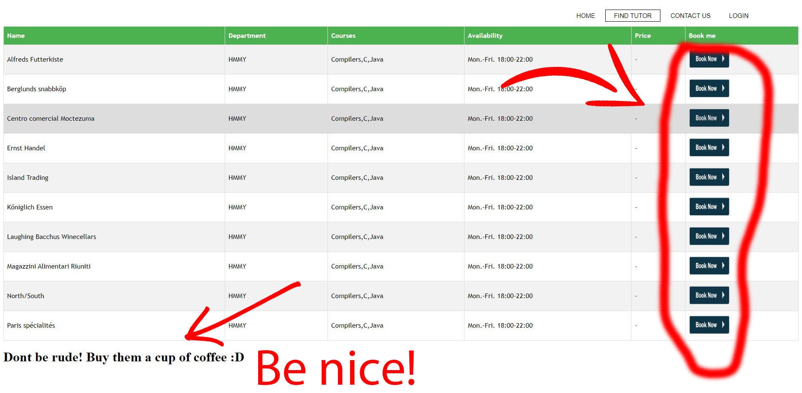

Uth tutoring
Table
of contents
Welcome 3
How To: 3
Uth tutoring is a website that helps you communicate,work and learn with other individuals more efficiently and productively.It is a platform ,made by students for students, that can provide you help with your studies since its purpose is to arrange a meeting between you and a volunteer in order to get tutored by him for free! But what if you don't feel that you need help and instead you feel like helping one of your co-students? Simple.You can sign up in our website and become a tutor yourself. Whether you struggle with your studies or doing just fine, a simple sign up can get you closer with great individuals from your department you might never heard of in order to help each other and make our university community a better place. Our platform is currently active only within the University of Thessaly's boundaries and more specifically in the city of Volos but we are hoping to expand soon enough and make this website a universal solution for every student in the world.
1. The first thing you need to do when you enter our website is to sign up.You will notice a Sing up now button in the middle of your screen. Click it.
2.As you can see the button will immediately provide you with a choice. Sign up as a Tutor or as a Student. It is essential to mention that registering as a Tutor does not mean you can't book a volunteer to help you in case you need it, but it was very important for us to make this discrimination because in Tutors cases you will need to fill more personal data in the sign up form and some students may feel that we violate their privacy. If you feel like becoming a tutor just click the tutor option as seen in the left picture bellow.
You will now notice the tutors registration form.Please fill out all the fields and click the submit button as shown in the right picture above. We will receive your application and a confirmation e-mail from us will be sent to you. If everything works out you will be in the tutors list within the day. We have to mention that you can login to the website as a student before we validate your personal information.
If you select the Student option as shown in the left picture bellow you will be forwarded to the student's registration form as shown in the right picture bellow.Please fill out all the fields,click the submit button and you are ready to go.
As you can see the required fields are less. It is important to mention that if in the future decide to also become a tutor, you can contact us , provide us with the extra information we need and we will make it happen.
3.Now you have to login to get access to our platform. Hit the LOGIN button in the top right corner of your screen and the login form will appear as shown in the picture bellow.
Fill out the form with your information and press the login button as shown above.
4.Now you are logged in and you are ready to find your tutor. Click the button FIND TUTOR form the navigation menu in the top right corner of your screen and you will see all our available tutors.You will see their information in detail regarding the names,the department they belong and the courses they can help you,their availability concerning the days and the hours, and in the last column you will notice a Book now button. Decide which one you prefer and click the Book Now option. This will take you to their youcanbookme page where you can setup your meeting with them. The tutor will contact you in order to confirm and there you have it.You have just set up your tutoring lesson.

As you have seen the price is always null.All tutoring lessons from this website are strictly free in the context of improving our community. Just buy the guy or girl a cup of coffee for the time they devote in helping you. Optional of course but where are your manners? :)
In case you are a tutor a notification is sent to you from your youcanbookme account that you have a new meeting. It is your responsibility to contact your fellow student in order to finalize the meeting. Have fun :)
In case this guide was not helpful to you or for any other reason regarding our website feel free to contact us. You can do that by clicking the CONTACT US button from the navigation menu in the top right of your screen by simply filling the form with your information and the subject you want to discuss with us and clicking the Submit button, or by contacting us through our social media pages as shown in the pictures bellow.